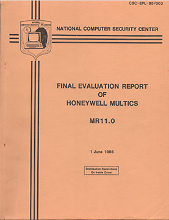
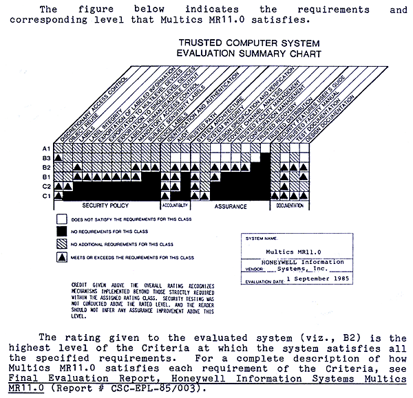

Loading
- DEB David Elliott Bell
- DMW Doug Wells
- JHS Jerry Saltzer
- MS Marv Schaefer
- SBL Steve Lipner
- WOS Olin Sibert
- WEB Earl Boebert
- GMP Gary Palter
- MP Mike Pandolfo
- GCD Gary Dixon
- HVQ Harry Quackenboss
Paragraphs by THVV unless noted.
This page still needs more information.
Areas that are incomplete are marked XXX.
Additions are welcome: please send mail to the editor.
Last update: 2026-08-02 11:14
Introduction
When Multics was released in the early 1970s, it had a large collection of features designed to provide privacy and security; each organization that installed a Multics system chose how to use them to achieve its goals.
In the 1970s, the US military realized that their requirements for handling classified documents were not met by any computer system. Research led by US Air Force Major Roger Schell led to explicit models of US government document security requirements that military computer systems would have to meet. US DoD-funded projects built several demonstration systems and added security features to Multics.
In the 1980s, the US National Computer Security Center established a system security evaluation methodology, and the Multics team made changes to Multics and provided documentation, leading to the award of a class B2 rating.
This article describes the Multics security evaluation that led to the B2 rating in the mid 1980s, starting with the needs and context, describing the actual process, and discussing the results.
| TYPE | YEAR | LSTYLE | HEIGHT | TEXT | TSTYLE |
|---|---|---|---|---|---|
| back | 1961 | #dddddd | 1966 | 7094 | |
| back | 1966 | #ddddff | 1973 | GE 645 | |
| back | 1973 | #ffdddd | 1978 | H 6180 | |
| back | 1978 | #ddffdd | 1982 | L 68 | |
| back | 1982 | #ddffff | 1987 | DPS-8/M | |
| back | 1987 | #eeeeee | 2000 | ||
| axis | 1960 | ||||
| axis | 1965 | ||||
| axis | 1975 | ||||
| axis | 1985 | ||||
| axis | 1995 | ||||
| axis | 2000 | ||||
| axis | 2010 | ||||
| axis | 2020 | ||||
| data | 1961 | 1 | CTSS | italic 9pt serif | |
| data | 1965 | 2 | FJCC|Papers | ||
| data | 1968 | 4 | system|up | ||
| data | 1970 | 5 | Honeywell | ||
| data | 1972 | 1 | 6180 | ||
| data | 1973 | 2 | AFDSC | ||
| data | 1976 | 3 | AIM | ||
| data | 1978 | 4 | Guardian | ||
| data | 1985 | 1 | B2 | ||
| data | 1986 | 2 | Multics|canceled | ||
| data | 1998 | 1 | DOCKMASTER|shut down | ||
| data | 2000 | 3 | DND-H|shut down|(last site) | ||
| data | 2007 | 1 | Open|Source|by|Bull | ||
| data | 2014 | 2 | Multics|Simulator | ||
| data | 1969 | -2 | Ware|Report | ||
| data | 1971 | -4 | Anderson|Report | ||
| data | 1972 | -3 | ESD|Penetration | ||
| data | 1982 | -2 | NCSC |
1. Early Computer Security
1.1 CTSS
MIT's CTSS, the predecessor of Multics, was designed in 1961 to provide multiple users with an independent share of a large computer. A major motivation for its security features was to ensure that the operating system and system accounting functioned correctly. The 1973 Project MAC Summer Study exposed time-sharing to many computer scientists visiting MIT. Some CTSS security features were:
- User program execution was done in a virtual 7094 with its own private unshared memory image.
- In user mode, the memory bounds register in the CPU trapped user program attempts to modify other users' programs.
- In user mode, the CPU trapped I/O and privileged instructions.
- The CTSS operating system executed in storage that user programs could not access.
- User login required a password. (March 1964)
- Users' files were protected from access by other users unless voluntarily shared.
- The system provided hierarchical administration and resource allocation. (Feb 1969)
The original CTSS disk file system only supported file sharing within a work group. In September 1965, CTSS enhanced users' ability to share files by allowing linking to other users' files (if permitted), and added a "private mode" for files that limited use to only the file's owner.
1.2 Other Systems
A session at the 1967 Spring Joint Computer Conference on security stated the requirements for operating system security as they were understood then. It included papers by Willis Ware, Bernard Peters, and Rein Turn and Harold Petersen, and a panel discussion on privacy that included Ted Glaser. Butler Lampson's 1970 paper on "Protection" [Lampson70] introduced the idea of an abstract access control matrix. Peter Denning and Scott Graham's 1972 paper "Protection - Principles and Practice" [Graham72] elaborated the matrix concept.
Almost as rapidly as computer systems implemented security measures in the 60s and 70s, the systems' protections were penetrated. [IBM76] Operating systems that were designed without security and had it added as an afterthought were particularly vulnerable. Chapter 11.11 of Saltzer and Kaashoek's Principles of Computer System Design [Saltzer09] presents computer security war stories from many systems.
1.3 Multics Security
The Multics objective to become a "computer utility" led us to a design for a tamper-proof system that allowed users to control the sharing of their files. Although MIT Project MAC was funded by the Advanced Research Projects Agency (ARPA) of the US Department of Defense, ARPA funding did not influence the design of Multics toward features specific to military applications. In the early 60s, J. C. R. Licklider's approach at ARPA's Information Processing Techniques Office (IPTO) was to support general improvements to the state of the computing art. One of the 1965 Multics conference papers, Structure of the Multics Supervisor, stated "Multics does not safeguard against sustained and intelligently conceived espionage, and it is not intended to."
[JHS] Deployment of CTSS brought the discovery that users had a huge appetite to share programs and data with one another. Because of this discovery, Multics was designed to maximize the opportunity for sharing, but with control. The list of security features in Multics is long partly because controlled sharing requires elaborate mechanics.
[DMW] Security was an explicit goal of the Multics design and was continually reviewed as the implementation progressed. System components were designed to use the least level of privilege necessary.
When Multics was made available to users in the early 1970s, it had a large set of security-related features.
- In user mode, the CPU trapped I/O and privileged instructions.
- Memory mapping registers in the CPU supported isolation of and switching between virtual address spaces.
- User programs did not have access to read or write operating system procedures or data.
- User program execution was done in processes with separate virtual address spaces.
- User login required a password.
- Users' files were protected from access by other users unless voluntarily shared.
- The system provided hierarchical administration and resource allocation.
- Each process's virtual address space consisted of multiple segments.
- A segment could be part of more than one address space.
- Each process's address space was defined by a descriptor segment that defined segment access rights.
- Segments had different access permissions depending on the referencing process's descriptor segment.
- Segments had individual maximum sizes; out of bounds references caused a fault rather than accessing a different segment.
- Segments' accessibility depended on the process's ring of execution.
- In the Multics 6180 CPU architecture, the ring of execution was supported and checked by hardware; current ring number was kept in a CPU register.
- The CPU checked segment access rights and ring brackets on every instruction and generated a fault on unauthorized access.
- The 6180 CPU architecture provided cross-ring pointer checking.
- The operating system's privileged components executed in the most privileged ring.
- Segments were in-memory mappings of files in the file system.
- The file system defined segment accessibility with Access Control Lists (ACLs) and Ring Brackets.
- When segments were made addressable as part of a process's address space, segment descriptor access permissions were derived from the file system ACLs and ring brackets.
- Changes to file system ACLs caused immediate recalculation or revocation of descriptor segment access.
- The system supported inner ring segments with extended access control permissions, such as message segments and mailboxes.
- Standard compiler output was non-writeable code (pure procedure).
- Standard compiler generated code used a stack segment for data; it was non-executable, as was the segment for static data.
- The PL/I string implementation runtime kept track of the declared and allocated sizes of a string.
- The call stack grew from lower addresses to higher, making it less likely that a buffer overrun would damage a return address pointer.
- Each process had a private directory for temporary storage (in >pdd).
Mike Schroeder and Jerry Saltzer described the 6180's ring mechanism in [Schroeder71]. Jerry Saltzer's 1974 paper [Saltzer74] describes the design principles underlying Multics security, and ends with a candid description of weaknesses in the Multics protection mechanisms.
Multics developers thought that the combination of our hardware and software architectures, along with careful coding, could provide an adequate solution to the security problem. As mentioned in Saltzer's 1974 paper, we considered Multics to be "securable" at correctly managed installations. As it turned out, we had a long way to go.
1.31 Usage Accounting
Both CTSS and Multics had comprehensive systems for measuring computer use, including limits on how much resources a user could consume. These features implemented the policies the MIT Computation Center used to allocate scarce computer resources among many users. In order to make these mechanisms work, these time-sharing systems had to be able to identify who was using resources (user names and passwords), to accumulate various usage measures per-user and compare it against quotas, and to protect the accounting and user registration files from unauthorized modification.
1.4 US Military Computer Security Requirements
The US government had established levels of security classification for documents (SECRET, TOP SECRET, etc) before the introduction of computers. Initially, the military computed with classified data by dedicating a whole computer to each secure application, or by completely clearing the computer between jobs. In the late 60s, some military computer users wished to use data with multiple levels of security on a single computer, e.g. the US Military Airlift Command. [Schell12]
Early military systems such as NSA's RYE system, and work at SDC addressed the problems of multilevel security. [Misa16]
In 1969, the Defence Intelligence Agency operated a system called ANSRS, later called DIAOLS. [NSA98] ANSRS protected information cryptographically and also employed access control checks. It was proposed that this system be used for multilevel security, and DIA developed an expanded system operating on GECOS III. DIA had done extensive in-house testing, and in July 1971 inaugurated a test of DIAOLS by test teams from the intelligence community. The tests concluded in August 1972. "For the DIA, the test was a disaster. The team effort proved that the DIAOLS was in an extreme state of vulnerability. The penetration of the GECOS system was so thorough that the penetrators were in control of it from a distant remote terminal." Further tests were proposed but DIAOLS was never certified for multilevel security.
In 1967, a US government task force on computer security was set up, chaired by Willis Ware of RAND: the task force produced an influential report in 1970, known as the Ware Report, "Security Controls for Computer Systems", that described the military's computer security needs. [Ware70] (The report was initially classified.) Ted Glaser was a member of the steering committee and the policy committee; Jerry Saltzer was on the technical committee; Art Bushkin was the secretary.
1.4.1 GE/Honeywell Military Sales
The World Wide Military Command and Control System (WWMCCS) sale by GE/Honeywell Federal ($46M Oct 1971, 35 mainframes, special version of GCOS, not multi-level) led to a significant expansion of GE's mainframe computer fabrication plant in Phoenix.
The Multics sale by GE/Honeywell Federal Systems Operation (FSO) in 1970 to Rome Air Development Center (RADC) at Griffiss Air Force Base in upstate New York did not depend on any security additions to Multics. This center did research on various security-related topics, but everything on the machine was at a single clearance level.
Honeywell FSO then bid Multics as a solution to a procurement by the US Air Force Data Services Center (AFDSC) in the Pentagon. AFDSC wanted to be able to provide time-sharing and to use a single system for multiple levels of classified information. AFDSC was a GE-635 GECOS customer already.
1.4.2 US Air Force Data Services Center Requirements
US Air Force Major Roger Schell obtained his PhD from MIT for work on Multics dynamic reconfiguration, and was then assigned to Air Force Electronics System Division (ESD) at L. G. Hanscom Field in Massachusetts in 1972. Roger had previously been a procurement officer for the USAF, and was familiar with the way that the US military specified and purchased electronic equipment. [Schell12]
Schell was assigned the problem of meeting the requirements of AFDSC, which wanted a computer system that could handle multiple levels of classified information with controlled sharing. ESD contracted with James P. Anderson to evaluate the security of the GECOS machines for this purpose, and carried out penetration exercises for DoD on the GE-635. Ted Glaser was also involved in these studies.
Schell convened a panel that produced the Anderson Report, "Computer Security Technology Planning Study." [Anderson72] Participants included James P. Anderson, Ted Glaser, Clark Weissman, Eldred Nelson, Dan Edwards, Hilda Faust, R. Stockton Gaines, and Steve Lipner. (The report described buffer overflows and how to prevent them.) In this report, Roger Schell introduced the concept of a reference monitor, implemented by a security kernel. [Schell12]
ESD funded projects at MITRE and Case Western Reserve University, directed by Schell, that described ways of modeling security. At MITRE, Steve Lipner managed David Bell and Leonard LaPadula. [Bell12]
1.4.3 System Penetration Exercises

Paul Karger and Roger Schell, Oakland, 1994. Click for a larger view.
After he graduated from MIT (having done a thesis on Multics), the late Paul Karger fulfilled his Air Force ROTC commitment by joining ESD. Schell, Karger, and others carried out penetration exercises for DoD that showed that several commercial operating system products were vulnerable, including the famous penetration of 645 Multics, [Karger74] which demonstrated problems in 645 Multics hardware and software.
These studies showed Multics developers that despite architecture and care, security errors still existed in the system. Finding and patching implementation errors one by one wasn't a process guaranteed to remove all bugs. To be sure that 6180 Multics was secure, we needed a convincing proof of the security properties, and comprehensive testing. A proof of security would have to show that the system design implemented the formally specified security policy model, and verify that the code implementation matched the design. Furthermore, the Multics security kernel code in ring 0 was commingled with so much non-security code that verifying its correct operation was infeasible, as Saltzer had pointed out in his 1974 paper.
1.5 Multics MLS Controls Added for US Air Force
Roger Schell launched a project that would extend Multics to add multi-level security features called the Access Isolation Mechanism (AIM), in order to meet AFDSC requirements. The project proposal claimed that the architecture of Multics hardware and software protection supported the addition of mandatory checking to enforce the military document security classification policy. Funding for the project came from Honeywell Multics Special Products in Minneapolis, who hoped to sell computers to AFDSC, and ARPA IPTO, who wanted to show military adoption of their research. Earl Boebert was a Multics advocate in Honeywell's Multics Special Projects office who helped sell Multics to the US Air Force. [Boebert15] Boebert established a group of developers at Honeywell CISL, including Lee Scheffler, Jerry Stern, Jerry Whitmore, Paul Green, and Doug Hunt.
AIM associated security classification levels and categories with all objects on the computer, and security authorization levels and categories with users. AIM enforced mandatory access control in addition to the discretionary access control provided by ACLs, and implemented the Star Property security policy specified by Bell and LaPadula. User processes had to have an authorization that was greater than or equal to the classification of data in order to operate on it (simple security), and information derived from a higher classification could not be written into a lower classification object (star property). No changes were made to limit covert timing channels.
Some specific features of the Multics AIM implementation were:
- Restrictions on the file system hierarchy were enforced: (1) files in a directory must have the same level as the directory. (2) directories contained in a directory must have the same level as the directory, or higher.
- Disk quota could not be moved between security levels, to avoid a covert storage channel.
- System building and tool dependencies were organized to create a secure supply chain.
- Changes were made to the answering service, device labeling, logging, I/O daemon queueing and output labeling.
- New Storage System features allowed specification of a mandatory access range for file system devices.
- MITRE built an AIM test suite.
AFDSC eventually installed six Multics mainframe systems, two of which stored multi-level information. The systems that processed classified information were used in a secure environment where all users had clearances.
The Air Force was not interested in "government special" systems: they wanted "commercial off the shelf" (COTS) products, so that they would get systems whose price was the lowest possible, and that would benefit from maintenance and improvements done for non-military uses of the system. Multics adopted this approach, and as a result, every Multics system shipped with the AIM mechanisms included and all data classified SYSTEM_LOW and all users authorized SYSTEM_LOW.
1.6 US Military Computer Security Projects in the Mid 1970s
In the mid 1970s, several other security efforts were funded by the US Department of Defense, through the Office of the Secretary of Defense (OSD), ARPA, and USAF.
1.6.1 Project Guardian
Project Guardian was a Honeywell/MIT/USAF project initiated by Roger Schell in 1975 to produce a high assurance minimized security kernel for Multics. [Schell73, Schiller75b, Gilson76, HIS76, Schiller76a, Schiller76b, Schiller77] This work addressed problems described in Karger's security evaluation paper. [Karger74] The goal was to "produce an auditable version of Multics." [Schroeder78]
The implementation of Multics in the 60s and 70s preceded the ideas of a minimal security kernel; we included several facilities in ring 0 for efficiency, even though they didn't need to be there for security, such as the dynamic linker, included in the hardcore ring even though ring 0 never took a linkage fault. In 1974, Ring Zero comprised about 44,000 lines of code, mostly PL/I, plus about 10,000 lines of code in trusted processes.
Several design documents were produced by a Honeywell Federal Systems team led by Nate Adleman on how to produce a Multics organized around a small security kernel. [Adleman75, Biba75, Adleman76, Stern76, Withington78, Woodward78, Ames78, Ames80, Adleman80] This entailed moving non-security functions out of ring 0. A team at MIT Laboratory for Computer Science, led by Prof. Jerry Saltzer, continued design work on this project. Participants included Mike Schroeder, Dave Clark, Bob Mabee, Phillipe Janson, and Doug Wells. This activity led to several conference papers. [Schell74, Schroeder75, Schroeder77, Janson75, Janson81]
Several MIT Laboratory for Computer Science TRs described individual projects for moving non-security features out of Ring Zero: see the References. These improvements to Multics never became part of the product. The prototype implementations looked like they would shrink the size of the kernel by half, but would have a noticeable performance impact. To adopt these designs into Multics and solve the performance problems would have required substantial additional effort by Multics developers. Resources were not available to support this work.
In 1973, as described in  Project MAC Progress Report XI, July 1973 - July 1974, Massachusetts Institute of Technology, Cambridge MA, July 1974, DTIC AD-A004966 pp 92-93,
Project MAC researchers audited the Multics supervisor looking for time-of-check-time-of-use (TOCTOU) violations,
and found many problems, with at least 8 exploitable vulnerabilities.
(These were easily repaired by ensuring that inner ring procedures copied their arguments before use.)
Project MAC Progress Report XI, July 1973 - July 1974, Massachusetts Institute of Technology, Cambridge MA, July 1974, DTIC AD-A004966 pp 92-93,
Project MAC researchers audited the Multics supervisor looking for time-of-check-time-of-use (TOCTOU) violations,
and found many problems, with at least 8 exploitable vulnerabilities.
(These were easily repaired by ensuring that inner ring procedures copied their arguments before use.)
1.6.2 SCOMP
SCOMP was a Honeywell project initiated by Roger Schell at ESD to create a secure front-end communications processor for Multics. [Gilson76, Fraim83] Roger Schell described the initial architecture, which was strongly influenced by Multics. The target customer was the US Air Naval Electronics System Command. Schell obtained funding for the project from ARPA and from small allocations in various parts of DoD. The project ran from 1975-77. SCOMP included formally verified hardware and software. [Gligor85, Benzel84] The hardware was a Honeywell Level 6 minicomputer, augmented with a custom Security Protection Module (SPM), and a modified CPU whose virtual memory unit obtained descriptors from the SPM when translating virtual addresses to real. All authorization was checked in hardware. SCOMP had a security kernel and 4 hardware rings. The SCOMP OS, called STOP, was organized into layers: the lowest layer was a security kernel written in Pascal that simulated 32 compartments. STOP used 23 processes to provide trusted functions running in the environment provided by the kernel. A Formal Top Level Specification (FTLS) for the system's functions, written in the SRI language SPECIAL, was verified to implement DoD security rules.
1.6.3 Other Secure Systems
Additional research related to military computer security was carried out at other institutions, many by people who had been associated with Multics:
- MITRE: PDP-11 security kernel, Lee Schiller [Schiller75a] (Roger Schell architect, managed by Steve Lipner)
- SRI: PSOS, Peter Neumann (BTL Multics architect), Rich Feiertag (MIT Multics developer)
- Ford Aerospace: KSOS, Peter Neumann, 1978, Boyer-Moore/Modula 2, ran on DEC PDP-11/45 and PDP-11/70
- Secure Ada Target, Earl Boebert (HIS Multics developer), PSOS based, evolved into LOCK
- UCLA: Gerry Popek (Harvard thesis based on Multics) secure UNIX, 1979
1.7 US Military Computer Security Projects at the End of the 70s
Air Force ESD was directed to discontinue computer security research by the Office of the Secretary of Defense in 1976. This led to several consequences:
- The Multics Guardian project was canceled, without shrinking ring 0. Some final reports were published. [HIS77]
- Roger Schell was reassigned to the US Air War College and then to the Naval Postgraduate School.
- Karger and Lipner went to DEC, to work on the A1 Secure VMS, or VAX/SVS (cancelled in 1990). [Lipner12]
Several projects did continue in the late 1970s at other organizations.
- The DoD Computer Security Initiative was started in 1977 under the auspices of the Under Secretary of Defense for Research and Engineering. Six seminars were held with published proceedings. [DODCSI1, DODCSI2, DODCSI3, DODCSI4, DODCSI5, DODCSI6]
- NBS workshops on the problems and solutions for building, evaluating, and secure computer systems were held in 1977 and 1978. (Ted Lee, Peter Neumann, Gerry Popek, Steve Walker, Pete Tasker, Clark Weissman).
- Air Force summer study at Draper
- MITRE work, Nibaldi report, introduced TCB [Nibaldi79]
2. US National Computer Security Center
The US Department of Defense Computer Security Center (DoDCSC) was established by DoD Directive 5215.1, dated October 25, 1982, as "a separate and unique entity within the NSA." Roger Schell credits the late Steve Walker as an important influencer in DoD's creation of this agency. Donald MacKenzie describes a crucial 1980 meeting between Walker and Vice Admiral Bobby R. Inman, Director of the NSA, which led to the creation of the Center. [MacKenzie04] The Center was tasked with "the conduct of trusted computer system evaluation and technical research activities" and the creation of an Evaluated Products List. DoDCSC addressed the US military's concern with the cost of acquiring and maintaining special-purpose computer systems with adequate security for classified information. [DOD82]
The late Melville Klein of NSA was appointed Director of the Center, and Col. Roger Schell Deputy Director. DoDCSC was renamed the National Computer Security Center (NCSC) in 1985. [Schell12] Among the 35 people initially assigned to the center were Dan Edwards and Marv Schaefer of NSA.
2.1 Theory of Security Evaluation
The basic idea behind NCSC's approach to security was that it was provided by a tamper-proof, inescapable reference monitor, as described by Roger Schell in the Anderson report. Abstractly, the reference monitor checked every operation by a subject on an object.
Based on work done in workshops and at MITRE, described above, the NCSC established that there should be several levels of computer system assurance, with different systems assured to different levels. The levels would be tiered by the threats that systems were exposed to: serious attacks, use only in a controlled environment, or unskilled opponent. Different levels of assurance would have different levels of testing. Systems that were assured to a higher level would give additional consideration to environmental factors, such as secure installation and maintenance.
2.2 Orange Book
The Orange Book was published by the NCSC on 15 aug 1983 and reissued as DoD 5200.28-STD in December 1985. Sheila Brand of NSA was the editor. [NCSC83] Architects of this document were Dan Edwards, Roger Schell, Grace Hammonds, Peter Tasker, Marv Schaefer, and Ted Lee. Although it was explicitly stated in DODD 5215.1 that presence on the EPL should have no impact on procurement, over time military RFPs began to require features from the Orange Book.
The Orange Book defined security levels A1 (highest), B3, B2, B1, C2, C1, and D. Roger Schell wrote an IEEE conference paper describing the ratings and the evaluation methodology. [Schell83]
Level B2, "Structured Protection," the level Multics aimed at, required formal documentation of the security policy; identifiable and analyzable security mechanisms; mandatory access control on all subjects and objects; analysis of covert storage channels and audit of their use; a trusted path to the system login facility; trusted facility management; and strict configuration management controls. Multics provided all of these features, and went beyond B2 by providing Access Control List features.
To attain B3, "Security Domains," Multics would have had to have the OS restructured to move non-security functions out of ring 0, as Project Guardian planned; provide additional security auditing of security-relevant events; add built-in intrusion detection, notification, and response; provide trusted system recovery procedures; demonstrate significant system engineering directed toward minimizing complexity; define a security administrator role; and provide analysis of covert timing channels.
A1, "Verified Design," was the highest rating. It required the same functions as B3, but mandated the use of formal design and verification techniques including a formal top-level specification, as done with SCOMP, and also formal management and distribution procedures.
Steve Lipner's article, "The Birth and Death of the Orange Book" describes the computer security requirements that led to the Orange Book, Project Guardian and other computer security projects of the 1970s, the creation of the NCSC and the Orange Book, and the evolution of the evaluation process and industry response, and the eventual abandonment of operating system evaluation. [Lipner15] He says, "If the objective of the Orange Book and the NCSC was to create a rich supply of high-assurance systems that incorporated mandatory security controls, it is hard to find that the result was anything but failure. ... If the objective of the Orange Book and NCSC was to raise the bar by motivating vendors to include security controls in their products, the case for success is stronger."
3. Multics Orange Book Evaluation in the 1980s
Naturally Honeywell wanted Multics to be evaluated according to the Orange Book criteria, and hoped that a high rating would make Multics attractive to more customers. Many people in the security community felt that Multics had been the test bed for concepts that later went into the Orange Book, and expected that the evaluation would be straightforward.
As Marv Schaefer describes in "What was the Question" [Schaefer04], the Orange Book criteria turned out to be imprecisely stated, and required many sessions of interpretation. As Schaefer says, "the process that became part of NCSC-lore made slow look fast in comparison."
[Olin Sibert] Multics was widely considered to be the prototypical B2 system, and there was some effort made to ensure that the criteria (Orange book) were written so that it could pass -- and that was clearly the intended outcome. There turned out to be some significant lapses, both in terms of product features (security auditing of successful accesses; control of administrative roles) and development process (functional tests for security features; software configuration management; design documentation), but overall, the only thing that could have prevented a successful outcome was cancellation of the product itself. Fortunately, Honeywell waited until evaluation had just been completed to do that.
3.1 Steps in the Multics Evaluation
The Multics evaluation was an early one, described in the the Final Evaluation Report for Multics MR 11.0 [NCSC85] (FER for short). (This process was later codified in NCSC-TG-002 [Bright Blue Book] Trusted Product Evaluation A Guide for Vendors.)
| Date | Event |
|---|---|
| Jan 1981 | NCSC established |
| Dec 1982 | Formal evaluation of Multics began at NCSC |
| Aug 1983 | Orange Book published |
| Feb 1984 | Penetration testing of Multics started |
| Summer 1985 | Functional Multics testing on System M |
| 1 Sep 1985 | Multics B2 rating awarded |
| 1 Jun 1986 | Multics Final Evaluation Report published |
| Jun 1986 | Multics cancelled by Bull, CISL closed |
3.1.1 Honeywell Decision
[WEB] IIRC, the Multics B2 project was suggested by Roger Schell. I pitched it to my boss, Chuck Johnson, and his boss, Jim Renier. It was funded out of Honeywell Federal Systems Operation. Phoenix LISD hated it because they saw it as a threat to their proposed GCOS follow-on -- our goal was to migrate WWMCS to Multics. Planning and budgeting was out of my office in Minneapolis. Phoenix taxed the hell out of us for the use of the CISL people, which is why I hired my own team.
[WEB] I was actually the Manager of Multics Special Projects. I chose the organization name because the initials formed the airport code for Minneapolis, just a way of getting a little dig in at Phoenix. My last task as I left HIS for the Systems and Research Center was to sign off on $24K worth of Henry Nye's expense reports.
3.1.2 Pre-Evaluation Review
Before actual evaluation began, there were a few steps. In the Multics case, the NCSC may have solicited a letter from Honeywell, or Honeywell FSO Marketing may have initiated the process. Since Honeywell had already sold computers to the US DoD, some of the paperwork would already be in place.
The NCSC preferred real products that would actually be sold: they didn't want "government specials."
When the NCSC accepted the evaluation proposal, there would be a Memorandum of Understanding signed by Honeywell and NCSC.
XXX Were all these documents created? if so, are they saved anywhere? Who signed them on each side?
3.1.3 Initial Product Assessment
The usual next step was for a vendor to prepare a package of design documentation for its product and send it to the NCSC. In the early days of evaluations, this process was probably informal and iterative.
In the Multics case, the NCSC had tailored the Orange Book requirements for B2 with an eye to Multics.
[WOS] The Multics documentation "requirements" were the subject of lengthy negotiations between CISL and the evaluation team, and before Keith Loepere took ownership of the activity, I think I was probably responsible for most of that (working on the NCSC side).
3.1.4 Formal Evaluation

XXX
who was the FSO project leader for B2 (worked for Earl Boebert)? who else in Marketing was involved?
the CISL effort for B2 must have been costly. what was the total cost, where did the funds come from, who approved it?
documentation was created as part of the B2 project. who figured out what docs were required?
there must have been some kind of schedule. did it take as long as it was expected to? did it cost as much?
was there opposition from Phoenix management, or other parts of Honeywell/Bull?
what other paperwork was agreed to between the NCSC and Honeywell?
did the NCSC release a Product Bulletin saying Multics was being evaluated for B2?
[HVQ] I was marketing head in Phoenix at the time, and Bob Tanner was program management working for LSID, and I was definitely involved in the product planning part, the impact on other priorities, etc. The eye opener for me was how much had to be done to enable events to be recorded for auditing purposes. Maybe some others involved with B2 can trigger some other memories, but some are not with us.
The goal of the evaluation phase was a detailed analysis of the hardware and software components of Multics, all system documentation, and a mapping of the security features and assurances to the Orange Book. This included actual use of Multics and penetration testing. These activities were carried out by an Evaluation Team, which consisted of US government employees and contractors. The evaluators produced the evaluation report under the guidance of the senior NCSC staff.
The result of the evaluation phase was the release of the 125-page FER, on 1 June 1986, awarding the B2 rating, and an entry for Multics in the Evaluated Products List.
[THVV] The FER was not classified, but it was marked "Distribution authorized to U.S. Government agencies and their contractors to protect unclassified technical, operational, or administrative data relating to the operations of the National Security Agency." I didn't want to publish the document without permission. (NSA was no longer using Multics: DOCKMASTER and SITE-N were long decomissioned.)
[THVV] Starting in 2005, I sought to obtain a copy of the FER for multicians.org. This turned into a long chase, with many email messages to members of the security community. In 2014, NSA said they had sent the "IAD archives" to NIST, but NIST couldn't find them. Some Multicians had copies but didn't know how to get permission to send it to me.
[THVV] Finally a Multician who was involved in this whole effort managed to get official permission to post the document in 2015.
3.2 Honeywell
([THVV] I left the Multics group in 1981 and missed the whole B2 project, so I'll have to depend on others for the story.)
3.2.1 Honeywell Federal Systems
[WEB] The project was run out of the Arlington VA sales office on a day to day basis, dotted line reporting to me.
3.2.2 CISL
Honeywell's Cambridge Information Systems Laboratory (CISL) was the primary development organization for Multics.
People and roles:
- John Gintell -- manager of CISL.
-
Michael Tague -- project mgr,
wrote
 MDD-002 Multics Security Model -- Bell and La Padula,
Opus mgr
MDD-002 Multics Security Model -- Bell and La Padula,
Opus mgr
-
Benson Margulies -- tech lead,
wrote 13 MTBs
and MDD-001 Overview and Index of Multics Design Documents
-
the late Maria Pozzo -- wrote 4 MTBs
and MDD-009 Resource Control Package
-
Olin Sibert -- wrote 1 MTB
and MDD-003 Overview of the Multics TCB,
then joined evaluation team
- Keith Loepere -- tech lead, wrote 2 MTBs and SIGOPS journal paper on covert channels
-
Paul Farley -- wrote MDD-005 System Initialization
- Gary Palter -- B2 testing
- Ed Ranzenbach
-
Ed Sharpe -- wrote 2 MTBs
and MDD-007 VTOCE File System
and MDD-008 Online Storage Volume Management
and MDD-024 System Logging
and MDD-029 Security Auditing
-
Eric Swenson -- wrote 3 MTBs
and MDD-010 System / User Control
-
Chris Jones -- wrote MDD-012 I/O Interfacer (IOI)
-
Mike Pandolfo -- wrote MDD-013 Multics Message Segment Facility,
rewrote ring-1 mail
-
Robert Coren -- wrote MDD-019 Traffic Control
-
Melanie Weaver -- wrote MDD-020 Multics Runtime Environment
- Ron Beatty
- John Gilson
- Allen Ball - student
- Wilson Wong
3.2.3 PMDC
Honeywell's Phoenix Multics Development Center (PMDC) was responsible for release testing and distribution, as well as development of some Multics subsystems.
People and roles:
- Frank Martinson
- Bonnie Braun
-
Paul Dickson -- wrote MDD-004 Multics Functional Testing
- Jim Lippard
- Bill May
- Rich Holmstedt
-
Gary Dixon -- wrote MDD-006 Directory Control, did post-B2 testing.
- Kevin Fleming
- Lynda Adams
-
The late George Gilcrease -- wrote MDD-017 Multics I/O SysDaemon
3.3 NCSC
3.3.1 NCSC Staff

Marv Schaefer, 2001
[Marv Schaefer] I think you should recall from the powder-blue version of the TCSEC that was handed out without restriction at the NBS/DoDCSEC security conference in 1982 -- and I believe -- in print in the IEEE Oakland Symposium paper by Roger Schell introducing either the Center or the Criteria, that the Orange Book was written with specific worked examples in mind: RACF for what became C2 (but which turned out only to get a C1), B1 as the 'secure' Unix (labels with training wheels), B2 as AFDSC Multics, and A1 as KVM and KSOS. SACDIN and PSOS were expected to make it to A1 as well.
[MS] So we, the seniors in the Center, were dismayed at the problems -- and the evaluator revolt -- against those expectations. It became clear that the evaluators were going to go out of their way to find fault with Multics (and by extension with Roger!) -- though we had written in either Roger's paper or in a related paper -- that we expected B2 Multics would succumb to more than one successful penetration. The evaluators' insurrection against both KSOS and Multics resulted in my direct intervention during senior staff meetings over the prolonged delays in the evaluators coming to a consensus.
[MS] There had been all kinds of "criteria lawyer" discussions/debates on DOCKMASTER over the strict wording in the TCSEC and how they needed to be interpreted for the candidate systems. There were battles over whether pages not yet allocated to any segment had to be purged when they were deallocated to satisfy the memory remenance issues for newly allocated segments had to be purged prior to being allocated or whether pages that were allocated to a segment could be purged just prior to their allocation -- yeah, I know what you're thinking! So yes, interpretations took forever, and they always ended up being resolved by some management decree.
Marv Schaefer wrote [Schaefer13]:
There were ambiguities we were not aware of as well as some that were intentional to permit creativity. These ambiguities were a serious issue to deal with, and we did not realize how serious a problem they would prove to be. When we wrote the TCSEC, we thought we were writing sufficiently clearly. And I remember when we tried to write some requirements as if they would fit in with contract monitoring activities, but they were still written by us as lay technologists, rather than as contractual lawyers... In fact, even getting a C1 evaluation through was hard because of specific wording in the criteria that proved to be ambiguous. And so that was one serious error in our writing of the TCSEC; almost none of the letters that Sheila received, addressed ambiguities in the wording. Evidently the people in the companies who were reading the draft criteria, read in the meanings that they thought made sense to them. We had written the drafts with meanings that made sense to us.
3.3.2 Multics Evaluation Team
[WOS] The evaluation team included:
- Deborah Downs, Aerospace Corp, Team leader
- Cornelius (Neal) Haley, NSA (I think), and now an independent contractor
- the late Maria Pozzo (now Maria King), MITRE (she moved from MITRE to Honeywell during the evaluation)
- Olin Sibert, Independent consultant, Evaluator
- Eric Swenson, 1st Lieutenant, Air Force Data Services Center (who likewise moved to Honeywell)
- Sammy Migues, 1st Lieutenant, Air Force Data Services Center
- Grant Wagner, NSA (now head of the R-division office that brought us SE/Linux)
- Virgil Gligor (then a U Maryland professor and consultant to NSA). He departed around when I joined (which I think was May 1983).
[WOS] I think there were others, but my memory is failing. Might have had one or two others from MITRE or Aerospace. I was the only one not from DoD or MITRE/Aerospace. Eric and Sammy might have come a bit later; I'm not sure when they joined, but they were certainly with us once we moved to the Pentagon.
The FER also lists as team members (page iv)
- Grace Hammonds (NSA)
- David J. Lanega (1ISG)
It acknowledges technical support from
- F. Patrick Clark
- Mindy D. Makuta
- Jay Steinmetz
and also acknowledges
- Walter S. Bond
- Ann Marie Claybrook
- Jaisook Landauer
- Paul Woodie
3.3.3 Matching the Model and Interpretation
[DEB] As it happens, I was at NSA while the B2 evaluation was going on. Mario Tinto, who was running the product-evaluation division at the time, asked me to take a look at the model and model interpretation documents.
[DEB] After the week-end, I met with him and said "the bad news is that there is nothing to link the Multics design documents to the model they point to [Ed. Len and my model]. the good news is I volunteer."
[DEB] So, I read the documents they had, including some design documents I hadn't seen before and drafted up a kind of cross-reference:
for function 1, it is interpreted as rule_n;
for function 2, it is interpreted as rule_k followed by rule_z;
...
to the end.
[DEB] Mario passed it on to the Multics team. After review, they returned with some comments and criticisms:
[DEB] "Now that we see what you're doing, here are some places where you're wrong -- these functions are not visible at the TCB. And here are some additional functions that are visible at the TCB, but that we hadn't included before."
[DEB] We went back and forth a couple of times till the designers and I were happy that we were both seeing things the same way.
3.4 Evaluation process, iterations
XXX
Honeywell FSO, Cambridge and Phoenix.
NCSC seniors and evaluation team.
The FER says that evaluation began in December 1982. (page 1)
[WOS] I wasn't present for the beginning of the evaluation, and don't know much before then. I think it was mostly administrative activity, getting set up (with FSD) for training, getting an initial document set, etc. All the NCSC interactions were taking place on MIT-Multics at that time, but there wasn't a lot of activity.
[WOS] My involvement started when I was contracted by Honeywell FSD to teach the advanced Multics courses (F80, Internals, and F88, Dump Analysis) to an audience that included the evaluation team. After that training the team (Deborah Downs, particularly) decided that they wanted to have me available for further consultation, since they really needed a Multics technical expert, and I started consulting for NSA (through Aerospace) shortly thereafter.
[WOS] One of my early contributions was explaining how Multics development worked and where the real work was done. This really turned a corner for the evaluation, because they had previously been dealing only with FSD, which really didn't have anything to do with development.
[WOS] I wasn't really involved with the Honeywell side of the evaluation -- although I was still doing some consulting work for Honeywell, it wasn't particularly evaluation-related. I recall Keith Loepere being the technical lead for evaluation work.
The FER says that penetration testing was carried out from February to July 1984. (page 84) 106 flaw hypotheses were generated, 84 were explored, and 70 were confirmed as flaws. 75% of the flaws were not exploitable. No flaws were design errors: most were simple programming errors. Honeywell corrected all non-trivial flaws in Multics release MR11.0.
[WOS] About penetration testing, it was a fairly long effort: bursts of activity separated by long intervals doing other things (or working on other projects -- evaluation of any one system was never a full-time activity for anyone). We didn't really have "rounds", and we didn't re-test explicitly. I don't believe the flaws ended up as part of the Honeywell-developed test suite. The five critical flaws (see section 3.4.5 and 3.4.6 below) were discovered during that effort.
[WOS] I don't believe we evaluators ever considered the successful penetrations a serious issue for Multics: they were relatively simple issues, easily remedied, and easily addressed for future work by improved coding/audit practices... which CISL/PMDC were eager to adopt, because security flaws are embarrassing. They certainly weren't fundamental design flaws.
[WOS] What were serious issues were things that were just missing, like:
- security auditing for successful operations (fixed with new logging mechanism and lots of security audit messages)
- security auditing of administrative actions (partly fixed with new security audit messages and better console logging)
- enforced separation of operator/administrator roles (improved, can't remember details)
- authentication for operators (fixed: operator login prompt)
- comprehensive design documentation (improved with MDDs, not completed)
- security functional testing (don't remember what happened here, but there was a huge difference between the System-M acceptance tests and what the TCSEC called for, and I think substantial work was done to address this area)
- configuration management mechanisms (fixed(?) with enhanced change comments and CM database)
[WOS] Those were all direct failures against explicit TCSEC requirements. They were pretty hard to sweep under the rug. And the news wasn't quite as welcomed by Honeywell, because the system had been pretty successful without them.
[WOS] We made a lot of compromises to get the evaluation finished, and relied a lot on promises of future work, especially for testing and documentation. That work of course never happened, since the product was canceled. That list probably isn't comprehensive -- I think there were also some esoteric object security policy issues, a bunch of covert channels (Keith Loepere did a lot of work there), and various minor deficiencies both in code and documentation.
[WOS] It's interesting to hear about the "evaluator's revolt". As an evaluator, I think what we faced was a disconnect between what Roger remembered from a decade earlier and what was actually present in the product. Sure, the basic processes and segments worked fine, but there was a lot more to the system than that. This was an issue with many evaluated systems -- senior staff would have, or obtain, a very rosy picture of the system, and then act surprised when that didn't match the reality. I remember some of those discussions -- it was often a surprise to the senior folks when we'd describe deficiencies, and it was often a surprise to the evaluators (and developers) when the TCSEC called for stuff that just wasn't done. I mean, they gave us the book, and if they'd wanted it to mean something different, they should have written it differently.
The FER describes the functional testing that was done in summer of 1985. (page 93) Honeywell had a large test suite that was developed at CISL and then run on a system in Phoenix. The evaluation team then developed additional tests that were run on the CISL machine and on AFDSC System T. About 72 flaws were found as a result of testing: most were not exploitable; Honeywell released a set of critical fixes to MR11.0 to fix the remainder.
3.4.1 Development Process
XXX
Need lots here.
Who did what.
There must have been internal task lists and progress reports.
Dev process was enhanced with extra code audit.
MTB-712 Policy and Procedures for Software Integration. (1985-05-15) and
MTB-712 Policy and Procedures for Software Integration. (1985-05-15)
describe the standard process, but not the extra B2 source code audit.
They mention some MABs we don't have copies of.
MTB-716-02 Multics Configuration Management: Tracking Software (1986-08-12)
describes configuration management and enhanced history comments in the source.
3.4.2 Documentation
XXX Some Multics documentation relevant to B2 existed and had to be identified. A lot more was required by the TCSEC, see the MDD series. Internal MTBs describing plans were written and discussed according to the standard Multics process. Presumably there were MCRs for each change, wish we had them.
3.4.3 Configuration management
XXX See MTB-716-02 Multics Configuration Management: Tracking Software (1986-08-12)
3.4.4 Source Code Audit and Testing
XXX
Separate B2 audit of all changes. Who did it. Did it find anything.
Functional tests in  MDD-004 Multics Functional Testing.
Five day test run on dedicated system in PMDC.
MDD-004 Multics Functional Testing.
Five day test run on dedicated system in PMDC.
3.4.5 Penetration Testing
[WOS] Deborah Downs led the evaluation and orchestrated the penetration testing effort. She started by preparing a fabulous set of background material and training in the Flaw Hypothesis Methodology -- this really focused our thinking [Weissman95, IBM76]. We spent multiple (eight?) week-long evaluation team meetings looking for flaws, occasionally coding software to test them, and writing up reports and recommendations. We also spent some "office time" in between those sessions working on penetration, but most of the penetration work was done as a group -- the interaction was an important part of our success. The work was much more discussion and analysis than actual testing -- indeed, for most flaws the problem was usually obvious once discovered, and actual testing was often superfluous.
[WOS] When we started working on the penetration testing of Multics, I think in early 1984, I was highly confident that there would be no serious flaws found. I knew all about the design principles, I knew what kind of attention we paid to security in the development process, I was confident about the architecture. The rest of the team pretty much agreed--none of us saw any obvious points of entry. Ah, hubris.
[WOS] After absorbing our background reading, we started by spending a day in a windowless conference room at MITRE brainstorming about flaw hypotheses. Many of them seemed naive to me, or too generic to investigate, but some were definitely thought-provoking. That evening I was inspired and coded an attack against a flaw in KSTE parent pointer validation that enabled me to create a ring zero gate in a directory of my choosing by fabricating a fake directory entry encoded in the 168 characters that were available as a link pathname. I tested it on MIT-Multics, miraculously not crashing the system (but creating a fair number of mysterious syserr messages) and demonstrated it the next day in that same windowless room in B building (now long since demolished).
[WOS] I was glad to have succeeded, but I was awfully embarrassed by my confidence that we wouldn't. It was a real eye-opener for all of us.
[WOS] We went on to find a total of five take-over-the-system critical flaws. Two were, I think, somewhat telegraphed by prior knowledge of something that didn't feel quite right, but the others were brand new. None were conceptual or design flaws--they were all easily remedied, mostly just implementation oversights. So I think our confidence in the architecture was well-placed, but the implementation had accumulated flaws, and a lot of what changed in Honeywell's development process subsequent to the penetration testing was targeted at making sure no one would never succeed like that again.
[WOS] I think we spent around 1-2 person-years in aggregate searching for flaws, interleaved with other evaluation activities over perhaps a six-month period. The flaws were not easy to find, and some of the exploits were really challenging to code. We spent a lot of time reading listings (in a different windowless room, in the Pentagon basement) and annotating them with colored markers. Eric Swenson and Sammy Migues had arranged for a complete set of hardcore listings to be printed, and we reviewed them page by page looking for time-of-check-to-time-of-use (TOCTOU) bugs and other parameter errors. Found some, too. We tested flaws these on the AFDSC Test system, which we did crash more than once.
[WOS] A tool we used a lot, I think, was a command called "call." It wasn't a standard part of Multics, but we didn't write it and I don't remember where it came from. [I think it was by Barry Wolman -- thvv] It was a command-line tool that could call any interface, supplying parameters converted from character strings. This allowed easy exercise of any possible combination of parameters (except structures, and those were relatively rare) to any ring zero interface. It made supplying nominally-invalid parameter values for testing much easier. I think we may have written some other little tools as well.
[WOS] All the discovered flaws required being a logged-in user. TCP/IP was not included in the evaluation, so there was no network stack to attack. There had been occasional problems found (not during the evaluation) in TTY input processing -- in one release, it was possible to hang the Initializer by typing 20 spaces followed by 40 backspaces -- but I don't ever recall any flaw that could be exploited from the login prompt to do anything but crash the system. (That space/backspace problem was extremely difficult to track down, even after we figured out how to reproduce it at will -- it was a subtle bug in input canonicalization.)
[WOS] In toto, I think we investigated about 100 flaw hypotheses, and found a dozen or so of minor bugs in addition to the five critical flaws. We reported them to Honeywell pretty promptly after we found them, usually with a recommended fix.
[WOS] I remember there was a lot of uncertainty about how to report them, or whether we could report them at all -- had we just inadvertently created classified information that we couldn't share? Doctrine said that a flaw in a government system should be considered at least as classified as the information it processed, and since the live systems at AFDSC (not the one we tested with, but others running the same release) processed TOP SECRET information, it seemed like that might be an obstacle (particularly for me, since as an outside consultant, I didn't even have a clearance!). I don't know how that obstacle was negotiated, but in the end, it didn't seem to get in our way.
[WOS] I don't recall the team deliberately re-testing after fixes. We might have re-run exploit programs on an ad-hoc basis, but for the most part the fixes were so obvious and simple that there wasn't any need. Release and update schedules also probably made this difficult -- even as a "Critical Fix", it took a while for updates to percolate to the systems we used for testing.
[WOS] One thing we realized during the penetration test work was that TOCTOU meant all the hardware ring checking for cross-ring pointers did not actually solve the parameter-passing problem, and that we needed software parameter copying anyway -- and if you're going to copy parameters in software, you could do ring checks at the same time. TOCTOU means it really isn't ever safe to reference outer ring data directly instead of copying -- even if it's safe to *access*, it's not safe to *use* because it might change. We found a lot of errors like this, but most of them were inconsequential either because there were no apparent possibilities for exploitation or because they involved privileged gate interfaces.
[WOS] During all this, I created a little application (lister and compose) to manage all the flaw information. We used that to produce very nice penetration testing reports, with summaries and cross-references. It's possible that I still have a copy of one in my files.
[WOS] Some exploits against today's systems are quite sophisticated, particularly compared to the type of trivial exploits that were once so common in Windows. However, the heap smashing and address probing and other clever techniques that people use now are quite similar to the things we did to break Multics over thirty years ago (and even earlier efforts such as the KVM/370 penetration test). Stringing all the steps together into an elegant exploit package is pretty cool, but it's a lot easier when you can test everything in the privacy and comfort of your own office -- we had to worry crashing the system or otherwise disturbing the operators. I do think it's impressive that many of today's flaws are found without source code -- I'm not sure how we'd have done with just object code, although people certainly did occasionally find Multics flaws that way in the field.
3.4.6 Five Critical Flaws
[WOS] I can only remember two of the five critical flaws in detail. One was the KSTE thing (which I could probably write up in enough detail to explain), and the other was a bizarre little interface called something like hcs_$set_sct_ptr (or something like that) which took a ring number as parameter, verified that it was not less than the caller's ring, then used it to index into an array in the PDS without further bounds checking, so it could write data anywhere later in the PDS. Oops.
[WOS] As I write that, I vaguely recall that one of our other flaws involved just that problem: a linker bug in which ring zero validated something in the linkage segment, then used it again without validation. I can't reconstruct it any better, so I may be way off. Might have been the event channel table instead. Or not even TOCTOU at all, just a case of trusting a complex outer-ring data structure.
3.4.7 Covert channel analysis
Covert channel analysis is described in MTB-696 Covert Channel Analysis (1984-12-07) and in [Loepere85]. It seems like they didn't actually address the page fault timing channel in Timing Channels.
[GMP] I recall working on covert channel analysis of the ring 1 message segment facility. I also remember Benson Margulies and I deciding to completely rewrite the message segment facility in order to properly isolate its access checking to a single module. We also added the required security auditing messages at the time (see MTB-685-01 Version 5 Message Segments (1984-11-12)). (Benson and I audited the original changes and determined that there were too many problems with it to fix them.)
XXX Covert channels that were not written up?
3.4.8 Technical changes made to Multics
XXX Need lots here... hoping Olin has a list
3.4.9 Anecdotes
[WOS] The Multics evaluation also produced the compose-based evaluation report templates. At first (and a bit before my time), NCSC used professional NSA typists (I believe) to produce reports on Xerox Star workstations (also how the TCSEC and various supporting documents got produced). Possibly the first SCOMP report ("preliminary evaluation"?) and some IBM add-ons (ACF2, RACF) were produced that way. That approach proved insupportable. The turnaround time was too long, and the Stars ended up -- literally in at least one case -- as doorstops. I also remember seeing a stack of them in a dead-end corridor for a while. Thus, as soon as NCSC got set up on Multics (first MIT-Multics, then Dockmaster), we started using compose for document production.
[WOS] Starting around 1983, NCSC did a bunch of early FERs and other documents in compose. I wrote a lot of the compose macros, which were mostly wrappers/enhancements for the MPM document macros. We did drafts on line-printer paper, and did production copies on the big Xerox 9700 printer at MIT.
[WOS] I think the Multics FER must have been among the compose-produced reports. During the Multics evaluation, I also created some toy databases in lister/compose for the penetration testing and other data-gathering/reporting tasks. The Multics evaluation used those, and I think Grant Wagner used them a few more times elsewhere, but they were a bit finicky and not widely used -- we might have used them for the IBM Trusted Xenix evaluation as well.
[WOS] Presently (maybe 1985/1986?), NCSC switched to TeX/LaTeX because using compose was like kicking a dead whale along the beach and TeX/LaTeX was seen as a more modern and viable technology. At first, using TeX/LaTeX required Sun workstations, but they were scarce at NSA (less so at Aerospace and MITRE), so we decided to try using Multics for that, as well. I can't remember how TeX/LaTeX got ported to Multics, but it might have been a test case for the UofC Pascal compiler or something. However, even with TeX running native on Multics, there was no way to print the output because the TeX output was produced as DVI files. So, we hired Jim Homan to convert dvi2ps from C to PL/I so it could create PostScript output that could then be printed.
[WOS] Eventually, Sun workstations became common throughout the evaluation community, and that relegated Multics to being a storage service for document components, rather than a document production system. PCs were also commonly used for editing document source files. I remember editing most of some final report in a windowless room in the NSA Airport Square offices using an original Compaq portable with two diskette drives and Epsilon as my editor. In the evening, we'd upload everything to Multics and run compose to get drafts.
[WOS] I don't miss compose ("Error: out_of_segment_bounds by comp_write_|7456" is burned into my memory), but in 40 years I have never again found a tool set for little databases that was as quick to develop with as the lister/compose pairing in combination with Multics active functions and exec_coms. We made things that would simultaneously spit out detailed reports, summaries, to-do lists, schedule tracker warnings, e-mail reminders, etc., all cobbled together as tiny bits of code with negligible redundancy. Some of that stuff did get converted to LaTeX, but the computational capabilities in LaTeX didn't integrate as well the ones in compose and it was never widely used. A subsequent generation of tools was developed in Perl by Dan Faigin.
[MP] I was also involved in B2 certification. Although I can't actually recall the interfaces into the TCB I was responsible for testing I do recall that once we started to test the ring 1 mail subsystem we realized it was nowhere near B2 compliance and we rewrote it. My favorite part of B2 was covert channel analysis. I wrote a tool that would transmit data from upper level AIM classes (e.g., Top Secret) to lower classes (e.g., Unclassified) at speeds up to 110 baud. Basically, I found a way to write-down. Keith Loepere wrote a general purpose covert channel attenuator that actually slowed Multics down if one of a set of defined covert channels was detected as being exploited.
3.5 Award
XXX Who exactly decided, and how... was there a meeting, was there a vote?

The Final Evaluation Report for Multics MR 11.0 [NCSC85] was published, and an official letter was sent to Honeywell [page 1] [page 2], which was used by Honeywell Marketing.
![[page 1]](mulimg/b2-page1.gif){kind=link}
![[page 2]](mulimg/b2-page2.gif){kind=link}
[WOS] The Multics B2 evaluation (like all the NSA's evaluations under that regime) was divided into two phases, but there was no notion of a "provisional" certificate -- exiting the "preliminary phase" really just meant that the evaluation team had demonstrated (to an NSA internal review board) that they understood the system well enough to do the real work of the evaluation. In theory, that also meant that the product was frozen and would be evaluated as-is, but in practice (for Multics and pretty much every other evaluation) changes kept happening as more issues were discovered. Indeed, if memory serves, I believe that Multics got its B2 evaluation certificate (in July, 1985) based in part on a promise that a number of additional documents would be finished promptly thereafter.
XXX Weaknesses and issues papered over.
3.6 Subsequent Maintenance
[GCD] After receiving B2 Evaluation status, I don't recall any significant problems being found in later Multics releases. Perhaps some were found when security changes were still done mainly at CISL in Cambridge. However, continued certification at B2 level required a more rigorous process for changing the Multics security software (BOS/BCE/Ring0/Ring1 software).
Every change to security software had to go through the normal code auditing and testing procedures; and MCRB review of such code was more stringent. Then the code went through a separate security-related code audit process by several people trained in B2 security/access-control-auditing requirements. I remember very few problems found during these separate security code audits; but some minor problems were found and corrected. Finally, the code changes had to be integrated into a test system, and to pass a security/audit regression test suite; with output from that testing again audited by security-knowledgeable personnel.
Only after passing all these reviews could the change be installed into the Multics code base. Testing of the newly-integrated changes then occurred on the CISL test system (while CISL existed), and on System M in Phoenix and MIT production systems. Only when all this functional and security testing, review, and exposure to real-life use was complete were the changes considered for shipment to other customers in a Multics release.
Needless to say, these extra process requirements made it more costly to implement changes within the security software. I was the designated person (NSA Vendor Security Analyst) for conducting these special security reviews of changes for about two years, after CISL closed. Our team in Phoenix carried out the special measures described above.
Several Multics Administrative Bulletins were published during the B2 effort.
- Third Party Software Submission Procedures, MAB-064
- Multics Configuration Management: Software Development, MAB-066
- Procedures for Software Installation and Integration, MAB-067-C
- Multics Configuration Management: Programming Standards, MAB-068
- Multics Configuration Management: Policy Statement, MAB-070
- Multics Security Coordinator: Duties and Responsibilities, MAB-071
Of special interest is Multics Configuration Management: Guidelines for Auditing Software, MAB-069, by [Dixon Gary Dixon] in 1985, which describes the code auditing process used by Multics developers for all Multics software, as well as the special steps taken for trusted software and for B2 functional tests.
3.7 Other
XXX
MLS TCP/IP in ring 1. (Ring 1 was not subject to AIM rules) Done by J. Spencer Love in 1983.
MRDS and forum ran in ring 2.
ring 3 was used for site secure software. e.g. Roger Roach's pun of the day at MIT.
[GMP] The Multics Mail System ran in ring 2. (MTB-613 Multics Mail System Programmer's Reference Manual (1983-06-01) documents the mail_system_ API.)
XXX The IP security option sent AIM bits over the network.. was this used for anything at AFDSC or elsewhere?
[WOS] AIM did start with 18 orthogonal categories; the folks who ran the NSA's Dockmaster Multics later changed it to 9 orthogonal categories plus one of 510 extended categories.
[GMP] When I created the Inter-Multics File Transfer (IMFT) system, I had it handle AIM by mapping categories and levels between systems based on the names assigned to the categories and levels at the two sites. (I don't know if this was ever actually used by a customer. I'm pretty sure the CISL/System-M connection didn't care.) I did give a HLSUA talk (in Detroit) on IMFT which might have some details on its handling of AIM.
4. Results
At the beginning of the 1970s, not many people were interested in computer security. There was no clear understanding of what was wanted. There was no commonly understood methodology for making secure systems.
By 1986, the OS security community had expanded. We had OS security conferences, polyinstantiation, and DOCKMASTER. One system, SCOMP, had been rated A1, and Multics had been awarded a B2 rating, and had been canceled by Honeywell Bull.
Design was begun at Bull for a follow-on product named Opus, targeted for a new machine. The target evaluation level for Opus was B3. This product was also canceled by Bull in 1988.
By 1990, no additional operating systems had been rated A1, B3, or B2.
In 2010, BAE Systems still sold the XTS-400, which ran the STOP operating system developed for SCOMP, running on Intel x86 hardware.
4.1 Good
The B2 effort changed our understanding of computer security from wishful thinking and "we tried really hard" to a more rigorous analysis. It proposed (and exposed problems with) evaluation methodology. The early claims Multics made for security were shown to be insufficient, and were superseded by a more thorough model of security and a more concrete understanding of the security that Multics provided. The B2 process was also a source of security corrections to Multics. It may have kept Multics alive for a few more years. Some Multics systems may have been sold due to the (promise of future) rating: Honeywell document GA01 is a marketing brochure version of Dave Jordan's 1981 article "Multics Data Security."
4.2 Multics systems that used B2 features
- AFDSC (2 of the 6 systems were multilevel TS/S)
- DOCKMASTER, no levels but used categories (modified)
- Site N (Flagship) probably
- DND-H, DND-DDS
- MDA-TA (SEDACS)
- RAE, first UK site to run MLS
- Oakland University used AIM to keep the students out of the source code.
- NWGS?
- SEP?
- SNECMA?
- ONERA?
- CNO source control
- others, e.g. GM/Ford?
4.3 Problems
XXX
Pressure on NSA and evaluators to award B2 rating, to prove B2 is real.
Pressure to be objective and fair.
Never done this before.
Many statements in Orange Book required interpretation.
Things not done or skated over.
Saltzer's list of areas of concern.
Things outside scope, e.g. network security, multi-system networks, heterogeneous networks
4.3.1 Criteria Creep
[WEB] What we discovered too late is the fundamental flaw in the notion of a vendor-funded evaluation. The problem goes like this:
[WEB] Every set of criteria, no matter how stringently written, requires interpretation. The interpretation is driven in large part by the perceived threat at the time the interpretation is made. The stringency of the requirements, and therefore the cost incurred by the vendor, correlates to the stringency of the interpreted requirements.
[WEB] The problem arises because the threat is constantly escalating, and with it the stringency of the interpreted requirements and the associated cost to the vendor. So ... Vendor A undergoes an evaluation in 1981 to the 1981 interpretations, spending X bucks in the process. Vendor B comes along in 1983 and finds that the interpretations have changed in response to the increased threat and now it costs X plus bucks to get through. Whining ensues.
[WEB] This problem was never solved by the process. Do you freeze the interpretations in 1981 and willingly accept an obsolescent system in 1983? Do you require the 1981 system to be re-evaluated to the 1983 interpretations? So "criteria creep" killed the whole idea.
4.4 In what sense Multics was "secure"
Multics was a "securable" mainframe system. It was designed to be run in a closed machine room by trained and trusted operators, and supported by a trusted manufacturer. The threat environment, at the time that Multics was designed, had no public examples of hostile penetration. The system's design also assumed that some security decisions were not made automatically, but were left to the skill of a Site Security Officer. For instance, users of Compartmented Mode Workstations and similar systems in the 90s had to deal with downgrading problems: we left all those to the SSO.
4.5 Relevance to current and future security needs
The high-assurance, military security, mainframe oriented model of the Orange Book is oriented toward the problems of the 1970s. We assumed that Multics systems ran on trusted hardware that was maintained and administered by trained and trusted people. People didn't buy graphics cards on Canal Street and plug them into the mainframe. In many ways, our security design pushed a lot of hard-to-solve issues off onto Operations and Field Engineering. Multics hardware originated from a trusted manufacturer and was shipped on trusted trucks, installed by trusted FEs, and kept in a locked room.
The Multics B2 experience influenced the plans for Digital's A1-targeted VAX/SVS development. [Lipner12] That product was cancelled because not enough customers wanted to buy it, and because the expected development and evaluation cost of adding network support and graphical user interfaces would have been too high.
[SBL] We also know that the models for OS security really aren't great as yet. Bell and LaPadula produces an unusable system - see the MME experience with message handling. Type enforcement is probably better but dreadfully hard to administer as I recall. Nice for static systems.
Different security models are appropriate for different business needs. The government MLS classification model is one market; Multics business customers struggled to apply it to their needs. The Biba data integrity model was implemented in VAX/SVS but never used, according to Steve Lipner. The Clark-Wilson security model was oriented toward information integrity for commercial needs; no high-assurance systems have implemented this model.
Multics influence continues to affect secure development. Recent papers by Multicians on multi-level security and smartcard operating systems continue to build on the lessons we learned. [Cheng07, Karger10] Multics influence is cited in the plans for secure development efforts such as DARPA's CRASH (Clean-slate design of Resilient, Adaptive, Survivable Hosts) program.
The Orange Book assurance process was too costly per operating system version. Computers At Risk [NRC91] talks about how the Orange Book bundles functional levels and level of assurance. It describes how the Orange Book process evolved into ITSEC, which provided more flexibility in defining what functions to assure, and also mentions issues with the incentives for system evaluators.
Commercial companies found it difficult to profit from building highly secure computing systems: demand was limited and costs were high.
Hiring and managing a team capable of building secure computing systems was a management challenge. The team had to support a development culture able to produce logically proven designs, thorough internal review of documents and code at each phase, and high quality zero-defect implementation and testing.
4.6 Conclusion
What we learned from Roger Schell:
- Security through obscurity doesn't work. Attackers can discover obscure facts. Any security weakness, no matter how obscure, can be exploited. In particular, keeping the source code secret doesn't work. Attackers get hold of source code, or do without.
- Penetrate and patch doesn't work. You're never sure that an attacker has not found a new vulnerability that your penetrators didn't.
- Counting on attackers to be lazy doesn't work. They will expend very large amounts of time and effort looking for weaknesses and inventing exploits, much more than simple economic models justify.
- Security has to be formally defined relative to a policy model. The model has to be consistent: it can't lead to contradictions: this means it must be expressed in formal logic and have a formal proof of consistency.
- To demonstrate that a system is secure requires a logical argument showing the interpretation of the policy model with respect to the system design.
- By definition, the part of a system that makes access control decisions is the reference monitor. If this is not a well-defined, protected part of the system, you have no hope of security.
- Showing that a reference monitor correctly implements a security model requires a logical demonstration. To do this, the monitor must be small enough to analyze completely (a security kernel). Unless the monitor is very small, this requires automated analysis.
- Proofs of security must still be verified by thorough testing.
-
System security has to be supported and managed throughout the whole system life cycle, including
- architecture and documentation
- programming standards and practices
- code review
- automated build and testing
- distribution and maintenance
- continuous improvement
Do we now know how to build a "secure" OS?
After the B2 exercises, do we now know how to build a "secure" OS? We know measures that help, including formal methods; we know things to avoid doing, including security-by-wishful-thinking. The few worked examples come with lots of qualifications and excuses.
Commonly available operating systems do not use rigorous security design, implementation, certification, and maintenance. They have a constant drumbeat of security exploits and patches.
Was it worth it?
The marketplace seems to have answered this question: not at current prices. See [Lipner15].
5. References
Chronological list of references
-
[Ware70]
Willis Ware, et al,
 Security Controls for Computer Systems (U): Report of Defense Science Board Task Force on Computer Security,
Rand Report R609-1, The RAND Corporation, Santa Monica, CA (Feb. 1970)
Security Controls for Computer Systems (U): Report of Defense Science Board Task Force on Computer Security,
Rand Report R609-1, The RAND Corporation, Santa Monica, CA (Feb. 1970)
- [Lampson70] Butler W. Lampson, "Protection", Proceedings of the 5th Princeton Conference on Information Sciences and Systems, 1971. p. 437
- [Graham72] G. Scott Graham, Peter Denning, "Protection - Principles and Practice", 1972 Joint Computer Conference.
- [Schroeder71] Michael D. Schroeder, Jerome H. Saltzer, A hardware architecture for implementing protection rings, Proc ACM Third SOSP, 42-54, October 1971. Commun. ACM 15, 3, pp.157-170, March 1972, also repository M0126.
- [Anderson72] James P. Anderson, Computer Security Technology Planning Study, ESD-TR-73-51, ESD/AFSC, Hanscom AFB, Bedford, MA 01731 (Oct. 1972) [NTIS AD-758 206]
-
[Anderson73]
James P. Anderson,
Multics Evaluation, James P. Anderson and Co., Fort Washington Pa, October 1973, NTIS AD-777 593/5.
-
[Schell73]
Roger R. Schell, Peter J. Downey, and Gerald J. Popek,
Preliminary Notes on the Design of Secure Military Computer Systems, The MITRE Corporation, Bedford, MA 01730 (Jan. 1973), MCI-73-1.
-
[Saltzer73]
Jerome H. Saltzer,
List of Multics Security Holes, revision 5, Internal MIT memo.
-
[Saltzer74a]
Jerome H. Saltzer,
List of Multics Security Holes, revision 6, Internal MIT memo.
- [Saltzer74] Jerome H. Saltzer, Protection and the control of information sharing in the Multics system, Commun. ACM 17, 7, July 1974, also https://portal.acm.org/citation.cfm?doid=361011.361067.
-
[Whitmore74]
J. Whitmore, A. Bensoussan, P. Green, D. Hunt, A. Kobziar, and J. Stern,
Design for Multics security enhancements, ESD AFSC Hanscom AFB Mass, 1974, ESD-TR-74-176.
-
[Karger74]
Paul A. Karger and Roger R. Schell,
Multics Security Evaluation: Vulnerability Analysis, ESD-TR-74-193, Vol 2, Electronic Systems Division, USAF, June 1974, NTIS AD-A001 120/5.
- [Schell74] Roger R. Schell, Effectiveness -- the Reason for a Security Kernel, Proceedings of the National Computer Conference, 1974, pp. 975-976. 1974.
-
[Schroeder75]
Michael Schroeder,
Engineering a security kernel for Multics, ACM Operating Systems Review 9, 5, pp. 25-32, Proc ACM 5th SOSP, November, 1975.
-
[Janson75]
Phillippe Janson,
Dynamic linking and environment initialization in a multi-domain process, ACM 5th Symposium on Operating System Principles, 1975.
- [Schiller75a] W. L. Schiller, The Design and Specification of a Security Kernel for the PDP-11/45, MTR-2934, The MITRE Corporation, Bedford, MA 01730 (Mar. 1975)
- [Schiller75b] Schiller, W. L., K. J. Biba, and E. L. Burke, A preliminary specification of a Multics security kernel, MITRE Corp, Bedford MA, April 1975, WP-20119.
- [Neumann75] Peter G. Neumann, L. Robinson, Karl N. Levitt, R. S. Boyer, and A. R. Saxena, A Provably Secure Operating System, M79-225, Stanford Research Institute, Menlo Park, CA 94025 (June 1975)
- [Adleman75] N. Adleman, Effects of Producing a Multics Security Kernel, Honeywell Information Systems Inc., Mclean Va Federal Systems Operations, October 1975, NTIS AD-A031 220/7.
- [Biba75] K. J.Biba, S. R. Ames Jr., E. L. Burke, P. A. Karger, W. R. Price, R. R. Schell, and W. L. Schiller, The top level specification of a Multics security kernel, MITRE Corp, Bedford MA, August 1975, WP-20377.
- [IBM76] C. R. Attanasio, P. W. Markstein and R. J. Phillips, Penetrating an operating system: a study of VM/370 integrity, IBM Systems Journal, no 1, 1976, pp 102-116.
- [Stern76] J. A. Stern, Multics Security Kernel Top Level Specification, ESD-TR-76-368, Honeywell Information Systems Inc Mclean Va Federal Systems Operations, November 1976, NTIS AD-A060 000/7.
- [Gilson76] J. R. Gilson, Security and Integrity Procedures., Honeywell Information Systems Inc, Mclean Va, Federal Systems Operations, 21 pages, F19628-74-C-0193, ESD TR-76-294, NTIS ADA040328.
-
[HIS76a]
Honeywell,
Prototype Secure MULTICS Specification, Preliminary draft, Honeywell Information Systems Inc., Mclean Va Federal Systems Operations, January 1976, NTIS AD-A055 166/3.
-
[HIS76b]
Honeywell,
Multics Security Kernel Certification Plan, Honeywell Information Systems Inc Mclean Va Federal Systems Operations, July 1976, NTIS AD-A055 171/3.
- [Adleman76] N. Adleman, Engineering Investigations in Support of Multics Security Kernel Software Development, Honeywell Information Systems Inc., Mclean Va Federal Systems Operations. October 19, 1976, NTIS AD-A040 329/5.
- [Schiller76a] W. L. Schiller, et al., Top level specification of a Multics security kernel, MITRE Corp, Bedford MA, July 1976, WP-20810.
- [Schiller76b] W. L. Schiller, Preliminary Specification of the Answering Service, Multics design note 33, MITRE Corp, Bedford MA, 1976.
-
[Schiller77]
W. L. Schiller,
Design and Abstract Specification of a Multics Security Kernel, MITRE Corp Bedford MA, 1977, NTIS AD-048576.
-
[Schroeder77]
M. D. Schroeder, D. D. Clark, J. H. Saltzer,
The Multics kernel design project, ACM Operating Systems Review 11, 5, Proc ACM 6th SOSP, West Lafayette, IN, November 1977, MIT LCS CSR-RFC-140.
- [HIS77] Honeywell, Project Guardian (Final Report), ESD-TR-78-115, Honeywell Information Systems Inc Mclean Va Federal Systems Operations, September 1977.
- [Ford78] Ford Aerospace, Secure Minicomputer Operating System (KSOS): Executive Summary Phase I: Design, Western Development Laboratories Division, Palo Alto, CA 94303 (April 1978)
-
[Withington78]
P. T. Withington,
Design and Abstract Specification of a Multics Security Kernel, Volume 2, MITRE Corp Bedford MA, March 1978, NTIS AD-A053148/3.
-
[Woodward78]
J. P. L. Woodward,
Design and Abstract Specification of a Multics Security Kernel. Volume 3, MITRE Corp Bedford MA, March 1978, NTIS AD-A053149/1.
-
[Ames78]
Stanley R. Ames Jr. and D. K. Kallman,
Multics Security Kernel Validation: Proof Description, Volume I, MITRE Corp Bedford MA, July 1978, NTIS AD-A056 901/2.
- [DODCSI1] Proceedings of the Seminar on the DoD Computer Security Initiative Program, National Bureau of Standards, Gaithersburg, Maryland, July 17-18, 1979. DTIC ADA101998.
- [DODCSI2] Proceedings of the Second Seminar of the DoD Computer Security Initiative, held January 15-17, 1980, Gaithersburg, Maryland.
- [DODCSI3] Proceedings of the Third Seminar of the DoD Computer Security Initiative, held November 18-20, 1980, Gaithersburg, Maryland.
- [DODCSI4] Proceedings of the Fourth Seminar of the DoD Computer Security Initiative, held August 10-12, 1981, Gaithersburg, Maryland.
- [DODCSI5] The Proceedings of the Fifth Seminar of the DoD Computer Security Initiative, held Mary 24-26, 1982, Gaithersburg, Maryland.
- [DODCSI6] Proceedings of the sixth Seminar on the DOD Computer Security Initiative: National Bureau of Standards, Gaithersburg, Maryland, November 15-17, 1983.
- [Nibaldi79] Grace H. Nibaldi, Proposed Technical Evaluation Criteria for Trusted Computer Systems, M79-225, The Mitre Corporation, Bedford, MA 01730 (Oct. 1979)
-
[Adleman80]
N. Adleman, R. J. Ziller, and J. C. Whitmore,
Multics Security Integration Requirements, 1 January 1976-31 December 1980, Honeywell Information Systems Inc., Mclean Va Federal Systems Operations, March 1976, NTIS AD-A041 514/1.
- [Ames80] Stanley R. Ames Jr. and J. G. Keeton-Williams, Demonstrating security for trusted applications on a security kernel base, IEEE Comp. Soc. Proc 1980 Symposium on Security and Privacy, April 1980.
-
[Janson81]
Phillippe Janson,
Using Type-Extension to Organize Virtual-Memory Mechanisms, Operating Systems Review, Vol 15 #4 (October 1981) pages 6-38.
-
[DOD82]
US Department of Defense,
Computer Security Evaluation Center, DoD Directive 5215.1, October 25, 1982.
-
[NCSC83]
NCSC Staff,
Department of Defense Trusted Computer System Evaluation Criteria, the "Orange Book", December 1983, DOD 5200.28-STD.
-
[Schell83]
Roger R. Schell,
Evaluating Security Properties of Computer Systems, IEEE Symposium on Security and Privacy 1983.
- [Fraim83] Lester Fraim, SCOMP: A Solution to the Multilevel Security Problem, IEEE Computer, v 16 no 7 (July 1983), pp 26-34.
- [Benzel84] Terry Benzel, Analysis of a Kernel Verification, IEEE Symposium on Security and Privacy, page 125-133. IEEE Computer Society, (1984)
- [Gligor85] Virgil Gligor, Analysis of The Hardware Verification of the Honeywell SCOMP, 1985 IEEE Symposium on Security and Privacy.
-
[Loepere85]
Keith Loepere,
Resolving covert channels within a B2 class secure system, ACM SIGOPS Operating Systems Review, Volume 19 Issue 3, July 1985.
- [NCSC85] NCSC Staff, Final Evaluation Report of Honeywell Multics MR 11.0, Evaluated Product Report, August 1985, CSC-EPL-85003.
- [Neumann90] Peter Neumann, Rainbows and Arrows: How the Security Criteria Address Computer Misuse, 13th National Information Security Systems Conference, 1990.
- [Gotch90] Leslie Gotch, Shawn Rovansek, Implementation and Usage of Mandatory Access Controls in an Operational Environment, 13th National Information Security Systems Conference, 1990.
-
[NRC91]
Computers at Risk: Safe Computing in the Information Age., Washington, DC: The National Academies Press, 1991.
-
[Ware95]
Willis Ware,
A Retrospective on the Criteria Movement,
18th National Information Security Systems Conference, 1995.
-
[Weissman95]
Clark Weissman,
"Essay 11: Penetration Testing", in
Marshall D. Abrams, Sushil Jajodia, and Harold J. Podell, eds.
Information Security: An Integrated Collection of Essays, IEEE Computer Society Press, 1995.
- [NSA98] Unknown author, NSA - History of Computer Security, 11 Feb 1998. Declassified 2020.
-
[Karger02]
Paul A. Karger and Roger R. Schell,
Thirty Years Later: Lessons from the Multics Security Evaluation, Proc ACSAC 2002, IBM Research Report RC22534..
-
[Schaefer04]
Marv Schaefer,
If A1 is the Answer, What was the Question? An Edgy Naïf's Retrospective on Promulgating the Trusted Computer Systems Evaluation Criteria, Proceedings of the 20th Annual Computer Security Applications Conference, 2004.
- [MacKenzie04] Donald MacKenzie, Mechanizing Proof: Computing, Risk, and Trust, MIT Press, Cambridge MA, January 30, 2004, ISBN: 9780262632959.
- [Cheng07] Cheng, P.-C., P. Rohatgi, C. Keser, P.A. Karger, G.M. Wagner, and A.S. Reninger, Fuzzy Multi-Level Security: An Experiment on Quantified Risk-Adaptive Access Control, RC24190 (W0702-085), 20 February 2007, IBM Research Division, Thomas J. Watson Research Center: Yorktown Heights, NY.
- [Karger10] Karger, P.A., D.C. Toll, E.R. Palmer, S.K. McIntosh, S.M. Weber, and J. Edwards. Implementing a High-Assurance Smart-Card OS, in Financial Cryptography and Data Security '10, 25-28 January 2010, Tenerife, Spain; Lecture Notes in Computer Science Vol. 6052. Springer. p. 51-65.
-
[Lipner12]
Steve Lipner, Trent Jaeger, Mary Ellen Zurko,
Lessons from VAX/ SVS for High Assurance VM Systems,
IEEE S+P 2012
-
[Schell12]
Jeffrey Yost, Roger Schell,
An interview with Roger R. Schell, Ph.D, conducted by Jeffrey R. Yost on 1 May 2012, Charles Babbage Institute call number OH 405, OH 405.
This interview contains Roger's recollections of his central role in high assurance computer security.
-
[Lipner12a]
Jeffrey Yost, Steven B. Lipner,
Oral history interview with Steven B. Lipner, conducted by Jeffrey R. Yost on 15 August 2012, Charles Babbage Institute call number OH 406, OH 406
-
[Bell12]
Jeffrey Yost, David Elliott Bell,
Oral history interview with David Elliott Bell, Oral history interview by Jeffrey R. Yost, 24 September 2012, Reston, VA. Charles Babbage Institute, University of Minnesota call number OH411., OH 411
-
[VanVleck12]
Jeffrey Yost, Thomas H. Van Vleck,
Oral history interview with Thomas Van Vleck, conducted by Jeffrey R. Yost on 24 October 2012, Charles Babbage Institute call number OH 408, OH 408
-
[Denning13]
Jeffrey Yost, Peter Denning,
Oral history interview with Peter J. Denning, conducted by Jeffrey R. Yost on 10 April 2013, Charles Babbage Institute call number OH 423, OH 423
-
[Neumann13]
Jeffrey Yost, Peter Neumann,
Oral history interview with Peter G. Neumann, conducted by Jeffrey R. Yost on 03 Jun 2013, Charles Babbage Institute call number OH 425, OH 425
-
[Edwards13]
Jeffrey Yost, Daniel Edwards,
Oral history interview with Daniel J. Edwards, conducted by Jeffrey R. Yost on 02 Jul 2013, Charles Babbage Institute call number OH 427, OH 427
-
[Schaefer13]
Jeffrey Yost, Marvin Schaefer,
Oral history interview with Marvin Schaefer, conducted by Jeffrey R. Yost on 20 November 2013, Charles Babbage Institute call number OH 435, OH 423
-
[Lipner15]
Steven B. Lipner,
The Birth and Death of the Orange Book, IEEE Annals of the History of Computing Vol. 37, No. 2: April-June 2015, pp. 19-31.
A thorough history of the Orange Book and its effect on secure computing.
-
[Boebert15]
Jeffrey Yost, W. Earl Boebert,
Oral history interview with W. Earl Boebert, conducted by Jeffrey R. Yost on 28 April 2015, Charles Babbage Institute call number OH 460, OH 460
-
[Misa16]
Thomas J. Misa,
Computer Security Discourse at RAND, SDC, and NSA (1958-1970), IEEE Annals of the History of Computing Oct-Dec 2016
MIT Laboratory for Computer Science publications related to B2 security on Multics. See the Multics Bibliography for the complete list of TRs.
- [Forsdick74] H. C. Forsdick, Patterns of Security Violations: Multiple References to Arguments, CSR-RFC-59, Nov 8 1974.
-
[Janson74]
P. A. Janson, Removing the dynamic linker from the security kernel of a computing utility, MAC-TR-132 (S.M. thesis), June 1974, 6.8M.
-
[Bratt75]
R. G. Bratt, Minimizing the naming facilities requiring protection in a computer utility, LCS-TR-156 (S.M. thesis), September 1975, 6.5M.
- [Frankston76] R. M. Frankston, A Two-Level Implementation of Processes for Multics, CSR-RFC-123, Sep 8 1976.
-
[Huber76]
A. H. Huber, A multi-process design of a paging system, LCS-TR-171 (S.M. thesis), December 1976, 5.7M.
-
[Janson76]
P. A. Janson, Using type extension to organize virtual memory mechanisms, LCS-TR-167 (Ph.D. thesis), September 1976, 9.1M.
-
[Montgomery76]
W. A. Montgomery, A secure and flexible model of process initiation for a computer utility, LCS-TR-163 (S.M. & E.E. thesis), June 1976, 6.4M.
-
[Reed76]
D. P. Reed, Processor multiplexing in a layered operating system, LCS-TR-164 (S.M. thesis), July 1976, 7.1M.
-
[Karger77]
P. A. Karger, Non-discretionary access control for decentralized computing systems, LCS-TR-179 (S.M. thesis), May 1977, 3.8M.
-
[Luniewski77]
A. Luniewski, A simple and flexible system initialization mechanism, LCS-TR-180 (S.M. thesis), May 1977, 3.8M.
- [Mabee77] R. F. Mabee, Further Results with Multi-Process Page Control, CSR-RFC-135, Feb 9 1977.
-
[Mason77]
A. H. Mason, A layered virtual memory manager, LCS-TR-177 (S.M. & E.E. thesis), May 1977, 4.4M.
-
[Schroeder78]
M. D. Schroeder, D. D. Clark, J. H. Saltzer, D. M. Wells,
Final report of the Multics kernel design project, LCS-TR-196, March 1978, 3.7M.
-
[Saltzer09]
J. H. Saltzer, M. F. Kaashoek,
Principles of Computer System Design, Part II, MIT Open Courseware, 2009.
A series of Multics Technical Bulletins were written by Honeywell staff to document the design plans.
- Benson Margulies, MTB-649 A B2 Security Evaluation for Multics (1984-02-17).
- Benson Margulies, MTB-657 Limited Subsystems for the Hierarchy and Volume Backup Dumpers (1984-05-11).
- Maria M. Pozzo, MTB-662 A B2 Security Evaluation for Multics - Revised (1984-07-02).
- Maria M. Pozzo, MTB-664 Design Documentation for the TCB (1984-07-02).
- W. Olin Sibert, MTB-666 New Logging Facilities (1984-07-04).
- Benson Margulies, MTB-667 A Partial Solution to Limitations on Quota (1984-07-06).
- Maria M. Pozzo, MTB-669 Summary of Discussion on MTB-656 (Reorganizing/Rewriting Administration and Maintenance Documentation) (1984-07-23).
- Eric Swenson, Benson Margulies, MTB-670-01 Moving the PNT to Ring 1 (1984-08-28).
- Ed Sharpe, MTB-674 Removing Volume Registration from Operator Control (1984-08-09).
- Benson Margulies, MTB-679 Security Audit Trails (1984-10-23).
- Benson Margulies, MTB-680 Identification and Authentication of Operators (1984-11-12).
- Keith Loepere, MTB-681-01 Restructuring Directory Control (1984-11-21).
- Maria Pozzo, MTB-682-01 Modifications to RCP access controls - Revision 1 (1985-04-09).
- Michael Tague, MTB-684 Answering Service Bump Request (1984-10-09).
- Benson Margulies, MTB-685-01 Version 5 Message Segments (1984-11-12).
- Benson Margulies, MTB-686 Improving the Security of SAC and the Admin Password (1984-10-25).
- Ed Sharpe, MTB-692 A New Ring-0 Auditing Mechanism (1984-11-07).
- Eric Swenson, MTB-693 Improving the Security of Multics IPC (1984-11-11).
- Benson Margulies, MTB-694 ssu_ System Control and iox_ Message Coordinator (1984-11-12).
- Keith Loepere, MTB-696 Covert Channel Analysis (1984-12-07).
- Benson Margulies, MTB-697-01 Improving the security of Message Coordinator input (1985-01-08).
- Eric J. Swenson, MTB-698 B2 Answering Service Auditing Changes (1985-01-09).
- Benson Margulies, MTB-699 Messages from privileged processes to user processes (1985-01-15).
- Benson Margulies, MTB-700-01 Allowing system privilege setting in ring 1 (1985-01-22).
- Benson Margulies, MTB-706 Avoiding Ring 0 Audit of Ring 1 TCB file system operations (1985-04-04).
- Richard A. Holmstedt, Gary Johnson, F. W. Martinson, MTB-712 Policy and Procedures for Software Integration. (1985-05-15).
- Benson Margulies, MTB-713 MR11 Configuration Management (1985-05-17).
- Lynda J. Adams, MTB-716-02 Multics Configuration Management: Tracking Software (1986-08-12).
The 29 memos in the Multics Design Document series were produced by Honeywell for the B2 evaluation effort. Other documents submitted to NCSC were existing manuals that were found to be adequate for the evaluation but were to eventually be re-written for consistency. [info from Ed Ranzenbach] See the Multics Bibliography section on Multics Design Documents. 17 documents are online at MIT. Some others are marked "never published."
Posted 24 Apr 2014, updated 17 Jul 2016, updated 05 Oct 2016 updated 27 Apr 2021